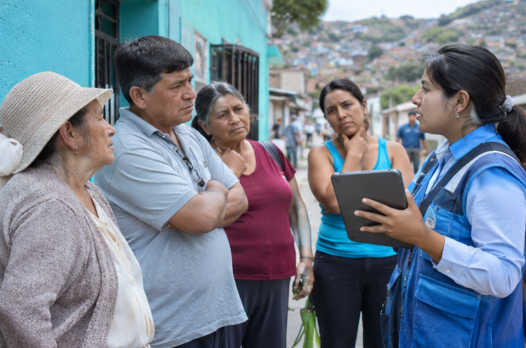
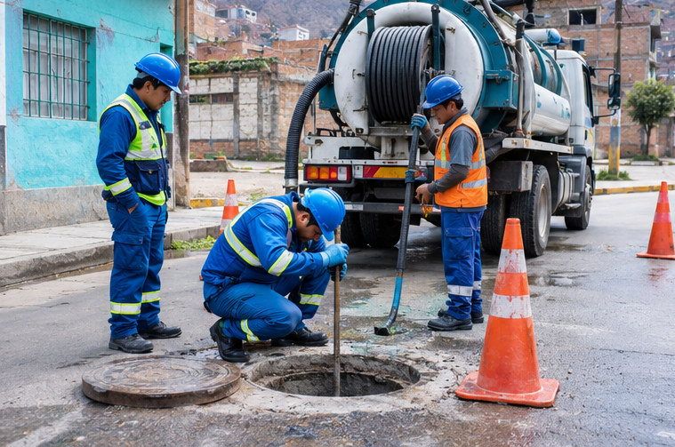

Ubica la incidencia
Identifica el tipo de incidente y describe dónde se encuentra el problema.
Ver estadosReportes de incidentes hídricos
Una fuga en la calle, un grifo averiado o agua de apariencia inusual son incidencias que merecen atención. Explora cómo registrar y dar seguimiento a un reporte hídrico.
Explorar estados Ver guía del proyectoPrototipo académico de reportes hídricos, inspirado en el ODS 6. No recibe denuncias reales.


Contexto de la gestión hídrica
La plataforma mWater permite recolectar y gestionar datos sobre agua, saneamiento e higiene (WASH). Este sitio es una demostración académica centrada en los reportes de incidencias hídricas.
Mostrar un recorrido de registro de incidencias y representar de forma didáctica posibles estados de sincronización de reportes.
El enfoque se relaciona con el ODS 6, que promueve el acceso al agua limpia y al saneamiento.
Un flujo en tres pasos
Identifica el tipo de incidente y describe dónde se encuentra el problema.
Ver estadosCompleta el formulario de ejemplo para conocer cómo se registraría una incidencia.
Probar reporteExplora los estados ilustrativos de guardado, envío y recepción de un reporte.
Ver la guíaPrototipo UX · Estados de un reporte
Selecciona un estado para ver cómo podría mostrarse un reporte en un sistema con sincronización. Esta sección es interactiva, pero utiliza datos ficticios.
Estados ilustrativos: esta página no guarda reportes ni se conecta con servidores de mWater.
¿Por qué reportar incidencias?
Una descripción precisa ayuda a localizar fugas, desbordes y averías.
Clasificar los incidentes puede facilitar su evaluación y atención.
El seguimiento visible permite comprender en qué etapa está cada caso.


“Una incidencia bien descrita ayuda a que el problema sea visible y pueda evaluarse a tiempo”.
Mensaje ilustrativo del propósito del proyecto; no corresponde a un testimonio real.
HU-03 · Formulario de reporte hídrico
Completa los campos para recorrer el ejemplo de registro. El formulario no utiliza GPS ni envía datos: conduce a una página de confirmación de demostración.
Utiliza información ficticia: no se almacenan ni tramitan incidencias reales.
Reporte: Pendiente | Tipo: Fuga
Reporte: En revisión | Tipo: Fuga

Reporte: En atención | Tipo: Avería
Reporte: Pendiente | Tipo: Abastecimiento